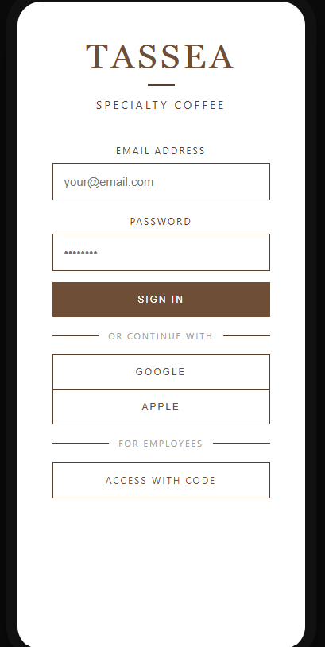
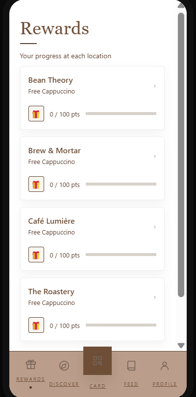
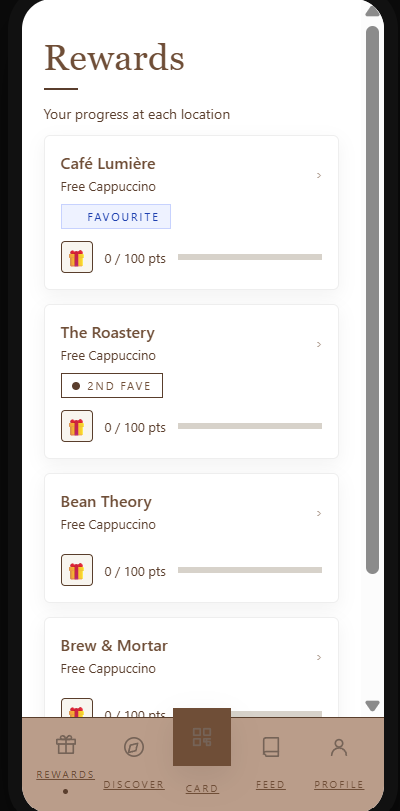
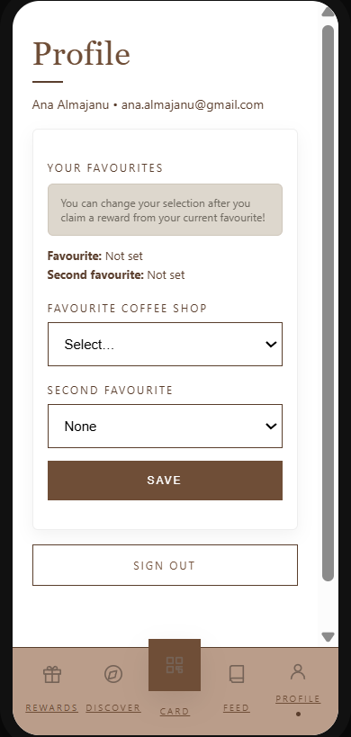
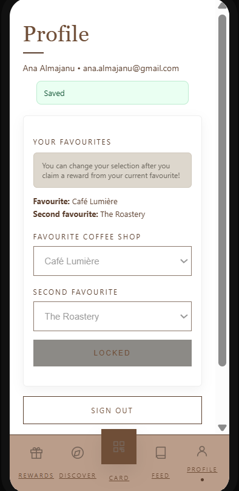
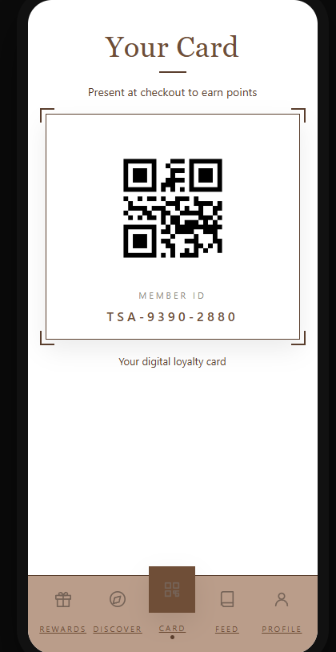
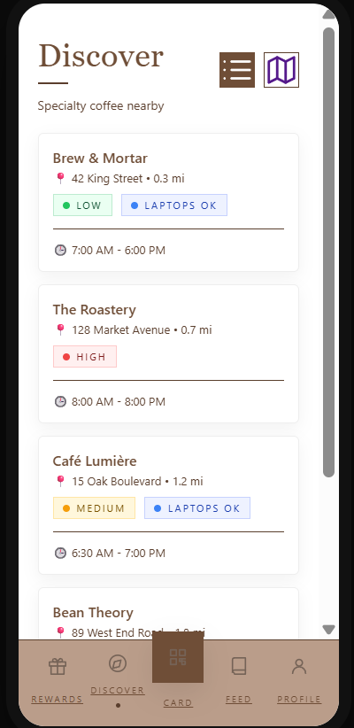
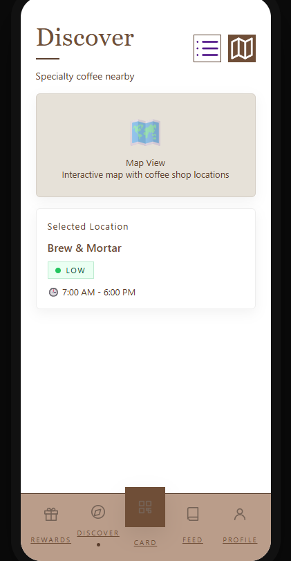
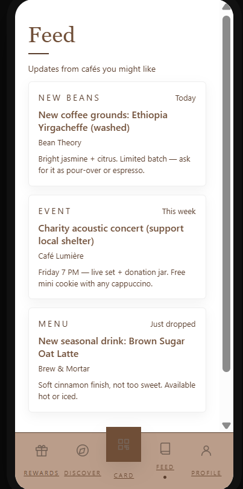

☕ Tassea – The Smart Loyalty Platform for Specialty Coffee Shops¶
Welcome to Tassea — a platform designed for specialty coffee shops and their customers.
This page outlines the project concept, team, problem, solution and business model.
Team & Roles¶
| Name | Role | Photo | |
|---|---|---|---|
| Ana Gabriela Almăjanu | Project Manager & Backend Developer | ana.almajanu@gmail.com | |
| Irene Mihaela Mușat | UI/UX Designer & Frontend Developer | irenemiha@gmail.com | |
| Cristian Constantin | Mobile App Developer & Creative Director | constantincristian05@icloud.com | |
| Andrei Mihai Cosmin | Backend Engineer & Database Specialist | andreimihaicosmin@yahoo.com |
☕ The team combines expertise in software development, UX design and business management to create a useful and scalable product.
Problem Statement¶
Most specialty coffee shops don’t have a loyalty or fidelity program, even though this would help in attracting more customers.
The traditional stamp card system is inconvenient, since customers often forget it at home or lose it.
Creating an individual digital app for each coffee shop isn’t practical — it’s expensive, difficult to maintain, and there’s no widely adopted platform focused on specialty coffee shops.
Existing “loyalty-only” apps bring little added value to the business.
Solution / Value Proposition¶
Tassea aims to be a shared platform for specialty coffee shops that provides:
- Core loyalty functionality (customers collect points or stamps through recurring visits);
- Business analytics with insights about customer behavior and trends;
- Real-time occupancy tracking, helping users decide where to go based on crowd levels;
- Feedback & discovery features, allowing customers to explore new shops and interact directly with owners.
Tassea bridges the gap between customer engagement and valuable business data, creating a win-win ecosystem.
Customer Segment¶
Tassea primarily targets Gen Z and Millennials under 45 years old, who frequently visit local coffee shops and use mobile apps daily.
The segment can expand depending on the onboarding strategy and regional market.
Competition¶
| Competitor | Description | Limitation |
|---|---|---|
| Stampino | Offers basic digital stamp cards. Users earn 1 stamp per visit and get a free coffee after 9 stamps. | Only one feature (loyalty cards), very limited coffee shop selection, and stamps don’t transfer between shops. |
Tassea’s Advantage¶
Unlike competitors, Tassea goes beyond loyalty:
- Real-time occupancy information
- Discovery page for exploring new coffee shops
- Feedback and communication channel between customers and shop owners
- Business analytics for shop owners
- A cleaner, more engaging user experience
These features add tangible value for both customers and businesses.
Key Metrics¶
Tassea tracks and optimizes both customer and business performance indicators.
| Category | Metrics |
|---|---|
| B2C (Customer Side) | New user signups, activation rate, daily active users (DAU), occupancy checks per user, user retention, churn rate |
| B2B (Business Side) | Number of partner coffee shops, monthly onboarding growth, shop retention, loyalty participation rate, churned coffee shops |
Cost Structure¶
- Platform development and maintenance
- Cloud hosting and database services
- Design, marketing, and branding
- Business partnerships and outreach
Revenue Streams¶
Subscription model for coffee shops, available in pricing tiers:
- ☕ Basic – $99/month
- ☕ Pro – $149/month
- ☕ Enterprise – custom plans for larger chains
Idea Summary¶
Through thorough customer discovery and behavioral validation, Tassea confirmed that the lack of a unified, digital loyalty experience is a real and recurring problem in the specialty coffee market.
The proposed solution provides measurable value for both customers and business owners, laying the foundation for a sustainable and scalable platform.
Built on validated insights, Tassea stands as a smart, data-driven bridge between coffee lovers and their favorite cafés.
Customer Discovery & Validation¶
Before developing the platform, the team conducted a detailed Customer Discovery process to confirm that the problem we aimed to solve was real and worth addressing.
We approached this through in-person interviews, interviews over the phone and an online survey structured using the Mom Test framework, which focuses on real experiences and observable behavior rather than hypothetical scenarios.
Interviews with different coffe shop owners¶
The recordings for the interviews that took place over the phone can be found here: https://drive.google.com/drive/folders/1Bqm3PT7d_mWMIck6K7O33ANU9BYIiXeq
Noi.2 Cafe – Coffess Shop Owner Interview – Ana (Intervievator)
- Când vă gândiți la succesul vostru, cât de importantă este retenția clienților față de atragerea de clienți noi?
Depinde de grupul de clienți. Dacă vorbim de categoria 16–20 de ani, nu este foarte important să rămână constanți, pentru că în industria cafenelelor de specialitate, prețurile sunt destul de ridicate, iar acest grup de vârstă consumă foarte puțin. Mai important pentru o cafenea este să aibă o comunitate și un grup puternic cuprins între 25 de ani în sus, pentru că aceștia au putere de cumpărare și pe aceștia ne dorim să-i fidelizăm cât de bine putem. Dacă aș fi un 5toGo, atunci m-aș axa pe cât mai mulți clienți noi, cât mai mulți în fiecare zi. În cazul nostru, vreau să îmi țin clienții cât mai aproape, pentru că am categoria 25+.
- Care simțiți că este cea mai mare provocare în a transforma un client care intră prima dată într-una din locații într-un client fidel?
În prezent, în noiembrie 2025, este prețul. S-a scumpit foarte mult materia primă, de asemenea și taxele și impozitele; acest dezechilibru economic din țară la momentul actual creează cea mai mare provocare de a menține prețuri competitive. Pe lângă acest aspect, cea mai mare provocare ar fi să-i oferi clientului aceeași calitate de luni până duminică.
- Ați încercat vreodată în trecut un sistem de a răsplăti clienții fideli?
Da, avem. Clienții apreciază gratuități și discounturi.
- Aveți vreo metodă acum prin care să puteți lua legătura direct cu cei mai fideli clienți ai voștri, separat de publicul larg de pe social media?
Avem o comunitate pe WhatsApp, unde postăm informații și oferte. Cei care doresc să intre ne scriu direct când vor să facă parte din comunitate, ori intră direct folosind linkul de pe pagina de Instagram. Sunt destul de puțini; nu este un engagement foarte mare pe partea aceasta.
- Ați avut vreodată o situație în care ați fi vrut să știți mai multe despre tipologia clienților voștri (de ex. vârstă, frecvența vizitelor) pentru a lua o decizie de business? Puteți să-mi dați un exemplu?
Nu.
- Gestionarea fluxului de clienți și a locurilor disponibile este vreodată o provocare?
Poate să fie. Fiind o locație cu număr de locuri limitat, în weekend mai întâmpinăm probleme când oamenii vin și văd că toate mesele sunt ocupate, dar face parte din fluxul de clienți, din viața unei cafenele. Nu aș numi asta o problemă; este ceva normal.
- Simțiți că pierdeți clienți în orele de vârf pentru că locația pare plină din exterior sau pentru că timpul de așteptare e prea mare?
Sunt clienți care iau to-go. Clienții care vin de weekend, de la o plimbare, nu vin neapărat cu scopul de a găsi o masă. Dacă vin și găsesc loc, sunt fericiți; dacă nu, pleacă mai departe.
- Să presupunem că lansați o nouă băutură, schimbați meniul sau organizați un eveniment. Cum anunțați clienții despre asta în momentul de față?
Instagram și WhatsApp. Plus, dacă evenimentul este vineri, de luni până joi spunem despre acesta tuturor celor care vin la cafenea.
MUGSHOT – Coffess Shop Owner Interview – Ana (Intervievator)
- Când vă gândiți la succesul vostru, cât de importantă este retenția clienților față de atragerea de clienți noi?
Destul de importantă, deoarece clienții vechi aduc clienți noi, fie prin mijloacele de socializare, fie prin viu grai.
- Ați încercat vreodată în trecut un sistem de a răsplăti clienții fideli?
Da, fie le oferim reduceri consistente, fie le oferim ceva din partea casei.
- Să presupunem că lansați o nouă băutură, schimbați meniul sau organizați un eveniment. Cum anunțați clienții despre asta în momentul de față?
Promovăm evenimentele prin social media, în special Instagram, dar și prin promovare offline în cafenea.
- Aveți vreo metodă acum prin care să puteți lua legătura direct cu cei mai fideli clienți ai voștri, separat de publicul larg de pe social media?
Nu, din păcate, momentan nu.
- Ați avut vreodată o situație în care ați fi vrut să știți mai multe despre tipologia clienților voștri (de ex. vârstă, frecvența vizitelor) pentru a lua o decizie de business? Puteți să-mi dați un exemplu?
Nu, pentru că în momentul de față este destul de ușor să ne dăm seama cine ne trece pragul și cât de des vin, fiindcă ne aflăm între trei colegii/universități/licee. De obicei, oaspeții de dimineață sunt studenți și elevi, iar cei de seară sunt fie oameni din comunitate, persoane din acest cartier, fie persoane care au auzit de noi și vor să încerce băuturile, în special cocktailurile.
- Gestionarea fluxului de clienți și a locurilor disponibile este vreodată o provocare?
Nu, pentru că avem locuri oarecum limitate și știm cum să le organizăm în funcție de clienți.
- Simțiți că pierdeți clienți în orele de vârf pentru că locația pare plină din exterior sau pentru că timpul de așteptare e prea mare?
Nu, nu ne-am confruntat cu această problemă până acum.
Loom68 – Coffess Shop Owner Form Answers
- Când vă gândiți la succesul celor două locații, cât de importantă este retenția clienților față de atragerea de clienți noi?
Foarte importantă. Lucrăm constant prin marketing pentru a atrage clienți noi și pentru a ne mări comunitatea.
- Ce faceți în prezent pentru a încuraja clienții să revină la Loom68?
Păstrăm calitatea serviciilor și găsim mereu soluții noi de fidelizare. De exemplu, am lansat propriul nostru brand de cafea, în parteneriat cu Origo.
- Care considerați că este cea mai mare provocare în a transforma un client care intră prima dată în locație într-un client fidel?
Educarea lui în ceea ce privește specialty coffee și diferențierea noastră față de alte cafenele.
- Ați încercat vreodată în trecut un sistem de răsplătire a clienților fideli Loom68?
Suntem în proces de a-l implementa.
- Să presupunem că lansați o nouă băutură, schimbați meniul sau organizați un eveniment. Cum anunțați clienții despre asta în prezent?
Momentan doar prin Instagram, dar vrem să introducem și un newsletter pe e-mail.
- Aveți acum vreo metodă prin care să luați legătura direct cu cei mai fideli clienți ai voștri, separat de publicul larg de pe Instagram?
În afară de Instagram, nu avem nimic direct.
- Cum realizați în prezent o analiză a clienților care vizitează Loom68 și a trendurilor, precum orele cele mai aglomerate sau cele mai comandate produse din meniu?
Prin intermediul rapoartelor de vânzări, al stocurilor și al datelor din Google Maps privind orele de vârf la care oamenii caută cafeneaua.
- Ce fel de date despre vânzări sau clienți urmăriți în prezent? Folosiți rapoartele de la casa de marcat (POS)?
Da, folosim programul de vânzare, foi de calcul și rapoarte legate de bonul mediu și de situația financiară.
- Ați avut vreodată o situație în care ați fi vrut să știți mai multe despre tipologia clienților voștri (de exemplu: vârstă, frecvența vizitelor) pentru a lua o decizie de business pentru Loom68? Puteți să-mi dați un exemplu?
Până acum nu ne-am confruntat cu o astfel de situație, dar mi-ar plăcea să avem acces la astfel de informații.
- Gestionarea fluxului de clienți și a locurilor disponibile este vreodată o provocare?
Momentan nu, dar pregătim ceva destul de radical în privința asta.
- Simțiți că pierdeți clienți în orele de vârf pentru că locația pare plină din exterior sau din cauza timpului de așteptare prea mare?
Nu.
Online survey targeting customers¶
Participants revealed that most specialty coffee shop visitors rarely or inconsistently use loyalty cards. Many said they forgot or lost their physical card, while shop owners confirmed they lack a simple, unified digital solution for customer retention.
This confirmed that the problem wasn’t about disinterest but rather about inconvenience and fragmentation in existing systems.
The insights showed clear trends:
- 67% of respondents don’t use loyalty cards regularly.
- 100% expressed frustration after losing or forgetting a card.
- 50% abandoned a loyalty program due to complexity.
Beyond loyalty, 83% of participants said they had left a café because it was too crowded — a key validation for adding real-time occupancy tracking.
They also shared that Instagram is their main source for discovering cafés, while 83% delete retail app notifications immediately, suggesting that pull-based engagement works better than intrusive push notifications.
Key Research Insights¶
| Question Focus | Main Finding | Validation Insight |
|---|---|---|
| Why return to a café? | Quality and atmosphere matter most | Loyalty should support, not replace, experience |
| Use of loyalty cards | Low adoption (67% non-users) | Confirms usability gap |
| Forgotten card experiences | 100% frustration | Strong emotional pain point |
| Abandoning loyalty programs | 50% due to complexity | Need for simplicity |
| Leaving cafés due to crowds | 83% of users | Validates occupancy tracking feature |
| Discovering cafés/events | 67% via Instagram | Social-first marketing strategy |
| Notification behavior | 83% delete instantly | Avoid push; use pull UX |
| Curiosity about popular drinks | 83% interest | Opportunity for gamification and social proof |
Product Impact¶
| Research Insight | Design Decision |
|---|---|
| Lost or forgotten cards | Introduced fully digital loyalty wallet |
| Complexity discourages users | One-tap stamp and reward collection |
| Overcrowding issues | Added real-time occupancy tracking |
| Notification fatigue | Replaced push notifications with in-app updates |
| Instagram discovery behavior | Built marketing around social-first channels |
| Curiosity for trends | Introduced “Top Drinks” leaderboard and discovery feed |
From Discovery to Validation¶
These findings guided the development of Tassea’s MVP, focusing only on the most validated and high-value features.
The problem has been verified through user behavior, emotional responses, and measurable patterns.
The proposed solution aligns directly with what customers and café owners actually need: a digital, unified, simple, and data-driven loyalty experience.
Having confirmed the problem’s validity, the team is ready to move forward to the Customer Validation stage, where the goal is to test real-world adoption and willingness to pay through pilot programs with local coffee shops.
Future testing will include A/B experiments with different reward structures, engagement metrics, and business conversion rates.
Milestone 3 - Landing Page and Wireframe¶
Landing Page¶
https://irenemiha.github.io/Tassea-Landing-Page/
Wireframe¶
https://www.figma.com/design/JDFKhxI5rnJhUW1H8a17LA/Tassea-mobile-wireframe?node-id=0-1&t=nqhdsxksdpX9vvM0-1
Milestone 4 – Face-to-Face Interviews, Persona, User Stories, Use Cases & Updated Wireframes¶
Face-to-Face User Interviews¶
Link to the recorded interviews - https://drive.google.com/drive/folders/1slP7vBlLztdQ4nviRn6BNh3Lw81_w3bf?usp=sharing
Transcriere Interviu – Ana (Intervievator) & Marius (Participant)
Ana
Bună. Povestește-mi de ultima dată când ai folosit o aplicație de loialitate pentru o cafenea de specialitate.
Cum a fost procesul pas cu pas?
Marius
Nu cred că am folosit vreodată o aplicație de genul. Pare ceva ce poate ar trebui să folosesc, dar doar îmi place să dau mulți bani.
Nu folosesc.
Ana
Ce aplicații folosești în momentul de față, care stochează toate cardurile de loialitate pentru diverse cafenele?
Marius
Presupun că aș folosi ceva gen Apple Wallet sau Google Wallet, sau… nu știu, cred că așa se numesc.
Ana
Ce frustrări ai întâmpinat în procesul curent de a folosi un card de loialitate?
Marius
Având în vedere că n-am folosit până acum, niciuna.
Ana
Ce frustrare ai întâmpinat când ai vrut să vezi cât de ocupată este o cafenea?
Marius
Niciuna, adică, de obicei, mă uit pe geam și văd.
Ana
Cât de des folosești cardul de loialitate?
Marius
Destul de rar.
Ana
Când te-ai lovit ultima dată de un moment în care ai fi vrut ca procesul să fie mai ușor pentru folosirea unor carduri de loialitate?
Marius
La un moment dat foloseam card de loialitate la Mega Image și s-a actualizat aplicația și mi-a uitat cardul, iar eu nu mi l-am mai pus din nou, că era prea complicat.
Ana
Acum o să-ți arăt aplicația.
Aici este ecranul de login.
Aici apare cardul de loialitate. Pentru ce crezi că este acest ecran?
Marius
Păi probabil pentru rewards, având în vedere că scrie.
Ana
Dacă ai vrea să folosești un card de loialitate pentru a revendica un premiu, pe ce butoane ai apăsa?
La general, de pe orice ecran.
Marius
Nu știu, ori de jos, de la „Rewards”, sau… nu-mi dau seama exact dacă sunt pe pagina aia sau nu. Sunt pe pagină, pentru că scrie sus.
Păi, de exemplu, pentru prima cafenea aș apăsa pe săgeată sau pe cardul ăla și aș vedea ce se întâmplă.
Ana
Este ceva neclar sau neașteptat în procesul de a folosi această aplicație?
Marius
Nu știu, pare ok.
Ana
Ți se pare că lipsește vreun pas sau vreo informație necesară?
Marius
N-aș zice, adică ar trebui să o folosesc ca să îmi dau seama de lucruri de genul.
Ana
Ce crezi că se va întâmpla dacă apeși butonul acesta de „Feed”?
Marius
Habar n-am.
Ana
Ți se pare un proces greoi, prea lung sau fix cum trebuie? Unde te-ai simțit blocat sau nesigur?
Procesul de a folosi cardurile de loialitate din această aplicație.
Marius
Păi, nu mi-am dat seama cum s-ar sincroniza, de exemplu. Asta nu prea e clar. Adică eu văd aici ca și cum le-aș avea deja, dar nu știu cum aș ajunge aici.
Ana
A existat vreun moment în care nu ai știut exact ce trebuie să faci mai departe? Poți să-mi arăți unde?
Marius
Nu a fost.
Ana
Pornind de la ce ai văzut și de la ce am discutat deja, când ai avut ultima dată nevoie să vezi câte puncte ai pe un card de loialitate și cum ai procedat?
Marius
Nu știu, nu cred că am avut nevoie vreodată, adică nu cred că m-am uitat.
Ana
Ce faci acum pentru a urmări punctele sau recompensele la cafenele?
Marius
Având în vedere că n-am card de loialitate la cafenele, nimic.
Ana
Ce te face să folosești aplicațiile de acest tip regulat, dacă le folosești? Ce te îndepărtează de a le folosi?
Marius
Ar fi frumos să fie super ușor să îmi fac așa ceva. Adică să fie mai rapid, să fie un proces de fix 10 secunde.
Ana
Care a fost ultimul moment când o aplicație de acest tip ți-a economisit timp sau bani?
Marius
Niciodată, probabil.
Ana
Poți să-mi povestești de ultima situație în care ai fi vrut să folosești o aplicație ca aceasta, dar nu ai avut una potrivită?
Marius
Nu.
Ana
Funcțiile disponibile în aplicația noastră sunt „Rewards”, „Discover” și „Feed“. Care este funcția pe care ai folosit-o cel mai mult într-o aplicație similară și ce funcții nu ai folosit deloc?
Marius
Am folosit funcția de rewards, dar lucruri legate de discovery, de exemplu, nu am folosit niciodată.
Ana
Poți să-mi povestești și de o aplicație similară pe care nu ai mai folosi-o niciodată? Ce s-a întâmplat?
Marius
Da, păi, cum ziceam mai devreme: cardul de loialitate de la Mega Image am încetat să îl folosesc pentru că nu mai știam cum să îmi pun cardul înapoi în aplicație. Sau ar fi durat mai mult de 10 secunde.
Transcriere Interviu – Ana (Intervievator) & Ilinca (Participant)
Ana
Povestește-mi despre ultima dată când ai folosit o aplicație de loialitate pentru o cafenea de specialitate.
Cum a fost procesul pas cu pas?
Ilinca
Ultima dată când am folosit o aplicație cred că a fost acum o săptămână sau două, în momentul în care am vrut să îmi iau o cafea de specialitate și nu a fost atât de complicat. Trebuie doar să dau pe cardul acela.
Ana
Ce aplicații folosești în momentul de față ce stochează toate cardurile de loialitate pentru diverse cafenele? De ce le folosești, ce îți place la display?
Ilinca
Eu folosesc wallet-ul de la telefon propriu-zis și acolo am toate cardurile de loialitate. Le folosesc pentru că e mult mai ușor în momentul în care am mai multe lucruri în mână, să doar dau dublu clic pe buton și mi se deschid.
Ana
Ce frustrări ai întâmpinat în procesul curent de a folosi un card de loialitate, dar și în a vedea cât de ocupată este o cafenea?
Ilinca
De obicei, la cardurile de loialitate, câteodată nu merg, nu știu de ce, specific la cardurile mele. Tuturor le merg, mie nu, dar o să aleg să cred că motivul este telefonul și nu cardul propriu-zis. Și legat de cât de ocupată este o cafenea, nu prea stau în cafenea propriu-zis să beau cafeaua. De obicei o iau to go.
Ana
Cât de des folosești cardul de loialitate?
Ilinca
Cam o dată pe săptămână.
Ana
Când te-ai lovit ultima dată de un moment în care ai fi vrut ca procesul să fie mai ușor și ce anume era greu? Procesul efectiv de a folosi un card de loialitate?
Ilinca
Cred că momentul în care mi-aș fi dorit să fie un pic mai ușor procesul a fost atunci când mi l-am făcut, pentru că, din nou, nu mergea ceva la el, nu găseau ceva sau nu exista în baza lor de date. Dar am rezolvat, asta contează acum.
Ana
Aceasta este aplicația. Aici este ecranul de login și aici este efectiv cardul.
Ana
Pentru ce crezi că este acest ecran? (Pagina de “Rewards”)
Ilinca
Probabil efectiv cardurile.
Ana
Dacă ai vrea să folosești un card de loialitate pentru a revendica un premiu, pe ce butoane ai apăsa? Poți să alegi de oriunde.
Ilinca
Pe acesta. (A arătat spre acel simbol de cadou, de sub numele cafenelei, din pagina de “Rewards”)
Ana
A fost ceva neclar sau neașteptat în procesul de a folosi această aplicație?
Ilinca
Sincer, e un pic monotonă.
Nu are nimic care să te facă să vrei s-o folosești în mod special. Nu le vezi cu atâta ușurință. Nu îți sar în ochi absolut deloc.
Ana
Ți se pare că lipsește vreun pas sau vreo informație necesară?
Ilinca
Nu mi se pare neapărat că lipsește vreo informație, dar sunt în așa fel structurate încât nu-ți vine să apeși pe ele. Nu știu, eu nu le-aș fi aranjat așa.
Ana
Ce crezi că se va întâmpla dacă apeși pe acest buton? (Butonul de “Feed”)
Ilinca
Presupun că o să îți apară mai multe cafenele, mai multe chestii care se întâmplă în cafenele.
Ana
Ți se pare un proces greoi, prea lung sau fix cât trebuie? Unde te-ai simțit blocată sau nesigură?
Ilinca
M-aș bloca la alegerea unei cafenele, mi-ar fi greu să aleg una, dar asta e o problemă personală. Nu are legătură neapărat cu aplicația.
Nu cred că aș fi avut așa mari probleme. Dar dacă aș fi fost constrânsă de timp, probabil aș fi început să apăs pe toate butoanele doar ca să apară odată ce caut.
Ana
A existat vreun moment în care nu ai știut sigur ce trebuie să faci mai departe? Poți să-mi arăți unde?
Ilinca
Sincer, păi asta — de unde să îți revendici premiile. Adică nu îți sare în ochi, nu? Acolo aș fi întrebat sau aș fi cerut ajutorul unui barista sau cuiva din jurul meu.
Ana
Pornind de la ce am văzut și de la ce am discutat deja, când ai avut ultima dată nevoia să vezi câte puncte ai pe un card de loialitate și cum ai procedat?
Ilinca
Am primit un mail că am ajuns la numărul respectiv de puncte, dar în general, ca să fiu sigură că mi se înregistrează punctele, intru în aplicația cafenelei.
Ana
Ce faci acum pentru a urmări punctele sau recompensele de la cafenele?
Ilinca
Intru în aplicație.
Ana
Ce te face să folosești aplicațiile de acest tip regulat atunci când le folosești sau ce te îndepărtează de a le folosi?
Ilinca
Ce mă face să le folosesc ar fi faptul că e mult mai ușor decât să caut în multe email-uri când am primit eu niște puncte.
Ce m-ar îndepărta ar fi dacă ar fi foarte greoi să accesez acele puncte de loialitate.
Ana
Care a fost ultimul moment când o aplicație de acest tip ți-a economisit timp sau bani și cum?
Ilinca
Cred că de curând am avut o reducere la o cafenea. Fusese un pachet promoțional, ceva de genul acesta.
Ana
Poți să-mi povestești de ultima situație în care ai fi vrut să folosești o aplicație ca aceasta, dar nu ai avut una potrivită?
Ilinca
Când mă grăbesc și mi-aș dori să fie totul mult mai clar, să sară mult mai tare în evidență, sau când sunt obosită sau mă grăbesc și chiar nu am timp să mă decid și vreau să facă aplicația asta pentru mine.
Ana
Care este funcția pe care ai folosit-o cel mai mult într-o aplicație similară și ce funcții nu ai folosit deloc?
Ilinca
Nu prea am folosit funcția aceea de “Near me”, pentru cafenelele din jurul meu, dar cea mai folosită a fost efectiv cardul de puncte.
Ana
Și poți să-mi povestești de o aplicație similară pe care ai încetat s-o mai folosești? Ce s-a întâmplat?
Ilinca
Am încetat să mai folosesc aplicația de la Starbucks. La un moment dat nu mergea cardul nici pentru a plăti, nici nu putea fi scanat pentru puncte și a trebuit să discut cu ei până când au reușit să îmi facă alt card.
Transcriere Interviu – Ana (Intervievator) & Vlad (Participant)
Ana
Povestește-mi de ultima dată când ai folosit o aplicație de loialitate pentru o cafenea de specialitate.
Cum a fost procesul pas cu pas?
Vlad
Eu, sincer, nu am folosit niciodată o astfel de aplicație.
Ana
Ce aplicații folosești în momentul de față care stochează cardurile de loialitate pentru diverse cafenele, dacă folosești?
Vlad
Nu dețin o astfel de aplicație și nu am carduri de loialitate pentru cafenele.
Ana
Ai întâmpinat vreo frustrare până acum în a vedea cât de ocupată este o cafenea înainte să ajungi acolo?
Vlad
Da, aș zice că am întâmpinat, pe Google Maps, când apare „Busy”.
Ana
Cât de des folosești cardul de loialitate?
Vlad
Destul de des, la cumpărături.
Ana
Când te-ai lovit ultima dată de un moment în care ai fi vrut ca procesul să fie mai ușor? Ce anume era greu?
Vlad
Sincer, cred că singurul lucru care e greu e să îți scoți repede telefonul și să intri în aplicația respectivă.
Ana
Aceasta este aplicația. Aceasta este pagina de login, iar acesta este cardul tău.
Pentru ce crezi că este acest ecran? (Pagina de “Rewards”)
Vlad
Ecranul care îți arată punctele pentru fiecare cafenea.
Ana
Dacă ai vrea să folosești un card de loialitate pentru a revendica un premiu, pe ce butoane ai apăsa?
Vlad
Aș apăsa pe cafeneaua respectivă, pe numele ei.
Ana
Ți se pare că lipsește vreun pas sau vreo informație necesară?
Vlad
Sincer, nu. Pare destul de clar.
Ana
A fost ceva neclar sau neașteptat în procesul de a folosi această aplicație?
Vlad
Nu.
Ana
Ce crezi că se întâmplă dacă apeși pe acest buton? (Butonul de “Feed”)
Vlad
Cred că ar trebui să îmi arate ce carduri mai există, dar de la cafenelele la care nu am carduri.
Ana
Ți se pare un proces greoi, prea lung sau fix cât trebuie? Unde te-ai simțit blocat sau nesigur?
Vlad
Procesul pare destul de simplu și nu am nicio întrebare.
Ana
A existat vreun moment în care nu ai știut sigur ce trebuie să faci mai departe? Poți să-mi arăți unde?
Vlad
Nu, totul pare clar.
Ana
Pornind de la ce ai văzut și de la ce am discutat deja: când ai avut ultima dată nevoie să vezi câte puncte ai pe un card de loialitate și cum ai procedat?
Vlad
Am avut nevoie doar de câteva ori și am verificat efectiv aplicația: am deschis telefonul, am intrat în aplicație și am văzut punctele.
Ana
Ce faci acum pentru a urmări punctele sau recompensele la cafenele?
Vlad
La cafenele nu fac asta.
Ana
Ce te face să folosești aplicațiile de acest tip regulat, atunci când le folosești, și ce te îndepărtează de la a le folosi?
Vlad
Mă îndepărtează faptul că trebuie să instalez foarte multe aplicații.
Partea de discounturi și premii ar fi partea bună.
Ana
Care a fost ultimul moment când o aplicație de acest tip ți-a economisit timp sau bani și cum?
Vlad
Cred că ultima oară când am fost la piață și aveam puncte pe card. Cam atât.
Ana
Poți să-mi povestești de ultima situație în care ai fi vrut să folosești o aplicație ca aceasta, dar nu ai avut una potrivită?
Vlad
Aș putea spune că atunci când merg la mai multe magazine și vreau să cumpăr mai multe lucruri.
La cafenele mi-a lipsit până acum o astfel de aplicație.
Ana
Care este funcția pe care ai folosit-o cel mai mult într-o aplicație similară și ce funcții nu ai folosit deloc?
Vlad
Cea mai folosită funcție ar fi afișarea punctelor în aplicație.
Ce nu am folosit: stocarea mai multor carduri în aceeași aplicație.
Ana
Poți să-mi povestești de o aplicație similară pe care ai încetat s-o mai folosești? Ce s-a întâmplat?
Vlad
Nu am folosit o aplicație similară până acum.
User Persona¶
Persona 1 – The Busy Coffee Lover (Ilinca)
- Name: Ilinca
- Age: 21
- Occupation: Working Student
- Tech Usage: Heavy mobile user, relies on Wallet apps for quick access
-
Coffee Habits: Buys specialty coffee weekly, usually to-go, prefers fast interactions
-
Motivations
- Wants quick, simple, and clear processes
- Wants rewards and points to be instantly visible
- Prefers clean and intuitive interfaces
- Uses apps regularly only if the experience feels effortless
-
Pain Points
- Loyalty cards occasionally fail to scan
- Card creation can be complicated or buggy
- UI often feels monotonous and not engaging
- Reward redemption is not obvious at first glance
- Difficult to identify where to redeem points
- Gets frustrated if she must search through emails for reward info
-
Needs
- Clear, visible reward buttons and progress indicators
- Fast onboarding (under 10 seconds)
- Attractive, modern UI that encourages daily use
- Zero friction in scanning, collecting points, and redeeming rewards
- A layout where important actions stand out immediately
Persona 2 – The Minimal Effort User (Marius)
- Name: Marius
- Age: 23
- Occupation: Working student
- Tech Usage: Uses Apple/Google Wallet, avoids complex apps
- Coffee Habits: Rarely uses loyalty cards; prefers simplicity
-
Motivations
- Wants super fast interactions
- Uses loyalty systems only if effortless
- Wants apps to “just work” without setup
-
Pain Points
- Stopped using loyalty apps when they required setup again
- Doesn’t understand complex features (Feed, Discover)
- Doesn’t know how cards sync or appear in the app
- Not motivated unless the value is obvious
-
Needs
- A loyalty system that works automatically
- No complicated login / restoring cards
- Very simple interface with minimal screens
- Clear prompts and no ambiguity
Persona 3 – The Practical Occasional User (Vlad)
- Name: Vlad
- Age: 23
- Occupation: Working student
- Tech Usage: Uses standard apps like Google Maps and store loyalty apps; avoids installing too many apps
-
Coffee Habits: Rarely uses loyalty systems in cafés; more active with loyalty points in supermarkets; visits cafés casually
-
Motivations
- Wants fast, straightforward interactions
- Wants information about points to be easy to check
- Appreciates discounts or bonuses when available
- Prefers apps that do not require repeated logins or extra steps
-
Pain Points
- Finds it inconvenient to open multiple apps for different stores
- Dislikes installing many apps just for loyalty systems
- Sometimes struggles to quickly access an app when needed
- Busy indicators (like on Google Maps) are not always reliable
- Has never found a unified loyalty solution for cafés
-
Needs
- A single app where multiple coffee loyalty cards can coexist
- A simple, fast-access interface with minimal screens
- Clear indication of points and rewards
- A loyalty flow that works even for users who do not visit cafés frequently
- No setup repetition (no re-adding cards)
User Stories and User FLows¶
User Stories
- As a user, I want to add a loyalty card in under 10 seconds, so I don’t waste time.
- As a user, I want to clearly see how many points I have, so I know when I can redeem a reward.
- As a user, I want an attractive and intuitive interface, so I can use the app regularly.
- As a user, I want the app to work without errors, so I don’t abandon the loyalty program.
- As a user, I want reward actions to be easy to find, so I don’t get confused during checkout.
- As a user, I want the app to sync my cards seamlessly, so I don’t manually add them again.
Flow – Redeem a Reward
- User opens the app
- Navigates to the Rewards section
- Selects the loyalty card
- Taps Redeem
- A QR code appears
- Barista scans the QR
- Reward is redeemed
Updates Needed for Wireframe¶
Required changes:
- Make the Redeem button highly visible
- Increase visibility and emphasis on loyalty cards
- Add a short onboarding guide or micro-tutorial
- Add a clear points indicator
- Clarify the purpose and content of the Feed section
Milestone Conclusion¶
The interviews confirmed a strong need for simplicity, clarity, and speed.
The wireframes and user flows have been updated directly based on real user feedback, ensuring a more intuitive and efficient user experience.
---¶
Milestone 6 - Market Research¶
1. Target Market Size (TAM / SAM / SOM)¶
1.1. Market Definition¶
B2B – Paying customers (Tassea’s direct clients)
- Independent specialty coffee shops and small specialty chains.
- Initial geography: Romania, starting with major cities (Bucharest, Cluj, Timișoara, Iași, Brașov).
- Future expansion: Central & Eastern Europe, then wider Europe.
B2C – End users (free side of the platform)
- Gen Z and Millennials (<45 y.o.)
- Heavy mobile users, frequent café visitors.
- They use Instagram, Apple/Google Wallet and are familiar with loyalty systems.
1.2. Number of Specialty Coffee Shops¶
All numbers below are reasonable estimates based on public info and growth trends.
- Europe (TAM)
-
Approx. 5,500+ specialty coffee shops and roasteries.
-
Central & Eastern Europe (SAM – Regional)
-
We approximate ~600 specialty coffee shops relevant for Tassea.
-
Romania (SAM – Initial focus)
- Based on growth of the specialty scene, we estimate ~180–200 specialty coffee shops.
1.3. Revenue Assumptions per Coffee Shop¶
Tassea’s B2B model is subscription-based:
- Basic – 99 USD / month
- Pro – 149 USD / month
- Enterprise – custom
For simplicity, we assume an average of 110 €/month / coffee shop, which gives:
1,320 €/year / coffee shop
Using that, we can approximate the maximum annual revenue Tassea could generate if it dominated each market:
- TAM – Europe
-
5,555 cafés × 1,320 €/year ≈ 7.3 M€ / year
-
SAM – Central & Eastern Europe
-
600 cafés × 1,320 €/year ≈ 0.79 M€ / year
-
SAM – Romania (realistic launch market)
- 200 cafés × 1,320 €/year ≈ 0.264 M€ / year
For this milestone, it is realistic to say:
In the first five years, Tassea will primarily target the Romanian specialty coffee market (SAM ≈ 200 cafés), with the option to expand regionally after product validation.
1.4. Sub-Markets (Romania)¶
Within the Romanian specialty coffee market we can define several sub-segments:
- Mature specialty shops in big cities
- ~120–140 cafés (Bucharest, Cluj, Timișoara, Iași, Brașov)
-
Already active on Instagram, some using physical punch cards or ad-hoc loyalty.
-
New or second-tier city cafés
- ~40–60 cafés
-
High interest in growing a community but limited budget for a custom app.
-
Small chains (2–5 locations)
- ~10–20 businesses
- Strong need for cross-location analytics, unified loyalty and occupancy data.
2. Approximate Number of Players / Competitors¶
On the loyalty and café-tech market we can identify:
- Global / European digital loyalty apps (relevant to cafés)
- Roughly 8–12 apps offering digital stamp cards or loyalty programs.
-
Examples: Stamp Me, Selyo, GAWAPP, Mahalle, Yollty, SimpleLoyalty, BonusQR, etc.
-
Local (Romania) competitors
- Stampino – a Romanian multi-merchant digital stamp card app.
- POS systems with built-in loyalty modules (indirect competitors).
So, for your report you can state:
There are approximately 10–15 relevant competitors at European level in the “digital loyalty for cafés” space and 1–2 notable competitors in Romania on the multi-merchant loyalty segment.
3. Competition Overview & Estimated Market Shares¶
3.1. Main Competitors¶
Direct competitors (same problem, similar target customers):
- Stampino (Romania)
- Digital stamp cards, multi-merchant.
- Focus on loyalty only (no occupancy, no advanced analytics, no specialty focus).
-
Estimated ~30–40 locations total, some of them specialty coffee shops.
-
Stamp Me (Global)
- Digital stamp card app used by cafés, restaurants and small businesses.
-
Not focused on specialty coffee as a niche; more general loyalty.
-
Other digital loyalty platforms (Europe)
- Selyo, GAWAPP, Mahalle, Yollty, BonusQR, SimpleLoyalty etc.
- Similar offering: digital loyalty cards & basic customer tracking.
- Usually generic: restaurants, shops, beauty, retail – not specialty coffee only.
Indirect competitors:
- Large coffee chains with their own apps
- Starbucks Rewards, Costa Coffee, Caffè Nero, etc.
- They show that digital coffee loyalty works, but their tools are not available to independent specialty cafés.
3.2. Estimated Market Shares – Romanian Specialty Segment¶
Assuming ~200 specialty coffee shops in Romania:
- Stampino
-
If ~20–25 of their locations are specialty cafés, they cover roughly 10–15% of the Romanian specialty market.
-
Other global apps (Stamp Me, etc.)
-
Likely a very small presence in Romanian specialty cafés: under 5%.
-
No dedicated platform
- The majority of cafés currently use:
- Physical stamp cards,
- No loyalty at all,
- Or fragmented tools (WhatsApp groups, POS reports, Instagram).
So the market is highly fragmented, with no clear leader on the niche:
“Digital loyalty + occupancy + analytics for independent specialty coffee shops in Romania.”
This is exactly where Tassea positions itself.
4. Tassea’s Potential Market Share (Years 1–5)¶
We focus on the Romanian SAM ≈ 200 specialty cafés.
4.1. Adoption Assumptions¶
- Year 1 – Pilot / Early adopters
- Onboard interviewed cafés + a few others: ~6 cafés
-
Market share: ~3%
-
Year 2 – Scaling in major cities
- Strong presence in Bucharest + 1–2 major cities: ~20 cafés
-
Market share: ~10%
-
Year 3 – Expansion in university cities
- Consolidate in big hubs + new towns: ~40 cafés
-
Market share: ~20%
-
Year 4 – Word-of-mouth and network effects
- More cafés join after seeing results: ~70 cafés
-
Market share: ~35%
-
Year 5 – Niche leadership
- Tassea becomes “the default app” for specialty coffee loyalty in Romania: ~100 cafés
- Market share: ~50%
Table – Estimated Market Share¶
| Year | Cafés Using Tassea | Market Share (of ~200 cafés) |
|---|---|---|
| 1 | 6 | ~3% |
| 2 | 20 | ~10% |
| 3 | 40 | ~20% |
| 4 | 70 | ~35% |
| 5 | 100 | ~50% |
These values are consistent with:
- Clear user pain (67% do not use loyalty cards regularly, 100% frustration when losing them, 83% annoyed by crowds – from your survey).
- Lack of a strong, niche-specific competitor.
- Tassea’s extra features (occupancy, discovery, analytics) which give it a stronger value proposition than simple stamp apps.
5. Total Market Value & Value of Tassea’s Market Share (Years 1–5)¶
We keep the same assumptions:
- SAM Romania ≈ 200 specialty cafés
- Average revenue per café = 1,320 €/year (110 €/month)
5.1. Total Market Value for Tassea in Romania¶
- 200 cafés × 1,320 €/year = 264,000 €/year
This is the maximum yearly revenue Tassea could reach in Romania if it captured 100% of the SAM.
5.2. Tassea’s Expected Revenue per Year (Based on Market Share)¶
Using the adoption numbers from Section 4:
| Year | Cafés on Tassea | Revenue / Year (1,320 €/café) | Share of Total Market Value (~264,000 €/year) |
|---|---|---|---|
| 1 | 6 | ~7,920 € | ~3% |
| 2 | 20 | ~26,400 € | ~10% |
| 3 | 40 | ~52,800 € | ~20% |
| 4 | 70 | ~92,400 € | ~35% |
| 5 | 100 | ~132,000 € | ~50% |
5.3. Additional Upside – Regional Expansion (CEE)¶
If from Year 4–5 Tassea also sells in Central & Eastern Europe:
- SAM CEE ≈ 600 cafés ⇢ 792,000 €/year market value
-
Even a 5–10% penetration (30–60 cafés) would add:
-
30 cafés × 1,320 €/year ≈ 39,600 €/year
- 60 cafés × 1,320 €/year ≈ 79,200 €/year
on top of the Romanian numbers.
6. Profitability Conclusion¶
6.1. Cost Structure (from your project)¶
- Platform development and maintenance
- Cloud hosting and database services
- Design, marketing and branding
- Business partnerships and outreach
Assume:
- Fixed yearly costs (small team, lean marketing, hosting): ~50,000–60,000 €/year.
- Variable costs grow slowly with the number of cafés (support, infrastructure).
6.2. Break-Even Point¶
Based on the revenue projections:
- Years 1–2
- Revenue is still small (under 30,000 €/year).
-
Focus is on building the MVP, pilots and validating willingness to pay.
-
Year 3
- Revenue ≈ 52,800 €/year.
-
Tassea is already close to operational break-even for a lean student/startup team.
-
Years 4–5
- Year 4 ≈ 92,400 €/year
- Year 5 ≈ 132,000 €/year
- At this point the business can:
- Cover costs,
- Reinvest in product and sales,
- Potentially generate significant profit,
- Start expansion into other countries.
6.3. Final Conclusion on Profitability¶
- The specialty coffee market in Europe is growing fast, and digital tools for loyalty and analytics are still fragmented.
- In Romania, there is no dominant digital loyalty platform dedicated to independent specialty cafés.
-
With a realistic adoption path (3% → 50% of the Romanian specialty market in 5 years), Tassea can reach:
-
Break-even around Year 3,
- Strong profitability from Year 4 onwards,
- With additional upside if it expands into Central & Eastern Europe.
Milestone Conclusion¶
Based on the estimated market size, the number of competitors, the projected market share and the subscription business model, Tassea has a realistic path to profitability within 3–4 years and solid profit potential in Years 4–5, especially if regional expansion is successful.
Milestone 7 – Minimum Viable Product (MVP)¶
For this milestone, our goal was to build a minimum viable product (or an early prototype) that is “just enough” to be used and to help us validate the most important assumption:
Are people willing to use (and later pay for) a unified loyalty + discovery experience for specialty coffee shops?
At this stage, we are not trying to prove long-term retention. The MVP is designed to validate initial adoption + willingness to pay through early pilots, while creating a clear feedback loop for what to build next.
What we built (MVP scope) + why each part exists¶
1) Sign in / Access flow¶
We implemented a simple sign-in screen so users can enter the app consistently and we can measure “activation” (how many people actually start using it). This also mirrors the real product need for personalization (loyalty progress, favourites, profile info).

Motivation (MVP): - Initial value: users can immediately access their loyalty wallet. - Future benefit: enables account-based features (favourites, reward history). - Feedback loop: activation rate + drop-off point to validate usability.
2) Rewards (loyalty wallet)¶
The Rewards page aggregates progress across multiple cafés in one place, so users don’t need separate cards/apps. This was selected as the core “must-have” because it delivers the most direct value and supports willingness-to-pay testing.

Motivation (MVP): - Initial value: one place to track points and rewards. - Future benefit: scalable to more cafés and reward types. - Feedback loop: how often users check progress, what cafés they engage with, what rewards they aim for.
3) Favourite + second favourite system (partner loyalty + predictable customers)¶
We added a Favourite and Second Favourite café system to increase customer loyalty and to support our business partners. The purpose is to demonstrate to cafés that we can bring them regular, repeated customers, not just one-time visits.
To reinforce this, we implemented a “faster rewards” incentive model: - 100% of redeemed loyalty points count toward rewards at the favourite café - 85% toward rewards at the second favourite - 70% toward rewards at any other café
This lets the client choose where they want to earn rewards fastest, while giving partner cafés stronger predictability and repeat traffic.
We also support two favourites for real life usage: one café near home and one near work, so users can stay consistent and still feel rewarded wherever they typically buy coffee.

Motivation (MVP): - Initial value: users can prioritize cafés they actually visit most. - Business validation: proves we can generate recurring customers for partners. - Feedback loop: we can measure favourite selection patterns + impact on reward redemption behaviour.
4) Profile (manage favourites + “locked until claim” rule)¶
The Profile page displays the current selection and includes a clear rule:
“You can change your selection after you claim a reward from your current favourite!”
This MVP rule was intentionally introduced to (1) make favourites meaningful (not random toggling) and (2) tie the feature to a measurable action (“claim reward”), which is useful for validation with café partners.


Motivation (MVP): - Initial value: transparent preferences + quick personalization. - Future benefit: enables targeting (events, offers) and deeper personalization later. - Feedback loop: how often people try to change favourites, whether lock improves completion of reward cycles.
5) Your Card (QR)¶
We added a scannable QR-style card screen for checkout. This is essential to validate whether the “digital loyalty” experience feels practical in a real café environment.

Motivation (MVP): - Initial value: a single loyalty card that can be shown instantly. - Future benefit: ready for integration with real POS / staff scanning flows. - Feedback loop: users can report friction (“too slow”, “confusing at checkout”) and cafés can validate feasibility.
6) Discover (list + details)¶
Discover allows users to browse cafés and see quick decision info (distance, hours, basic status indicators). This is prototype-level discovery to test whether people want both loyalty + discovery in one place.

Motivation (MVP): - Initial value: helps users choose a café quickly, not just track rewards. - Future benefit: foundation for richer filters, personalization, and partner promotions. - Feedback loop: what users click, what info they look for first, whether discovery drives store choice.
7) Discover (map placeholder)¶
We included a map-view placeholder to communicate the intended direction (interactive map with café locations), without overbuilding it before validating demand.

Motivation (MVP): - Initial value: communicates the product vision (location-based experience). - Future benefit: clear next-step feature if users ask for it. - Feedback loop: if users repeatedly try to use it, that signals map-view demand.
8) Feed (prototype posts)¶
We added a lightweight feed with example posts (new beans, café event) because cafés already use social updates (Instagram/WhatsApp) and we want to test if users value these updates inside a loyalty/discovery app.

Motivation (MVP): - Initial value: users see what’s new without leaving the app. - Future benefit: supports partnerships (events, limited beans, promotions). - Feedback loop: which post types get attention (events vs. new beans) and whether this influences café choice.
What we deliberately did NOT build (yet)¶
To keep the MVP minimal and aligned with earlier validation, we postponed: - Café owner dashboard + analytics - Real-time occupancy from sensors/POS - Push notifications - Full social features (likes/comments/follow) - Payments/subscription billing inside the product
These will only be prioritized after validating adoption and partner interest during pilot testing.
Planned MVP testing & feedback loop (next step)¶
We will test with early adopters (customers + a small set of partner cafés) using: - Short user interviews after usage - Café staff feedback on checkout flow - MVP metrics such as: - Activation rate (sign-ins) - Favourite/second favourite adoption rate - Rewards page usage frequency - Reward claim completion rate (especially at favourite café) - Discover engagement - Feed engagement by post type
This milestone results in a working MVP/prototype that can be shown, tested, and iterated based on real feedback — not assumptions.